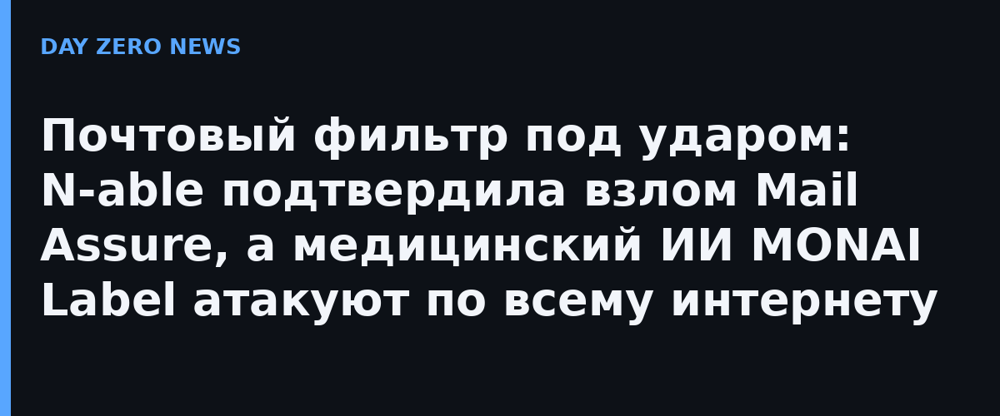

N-able опубликовала официальное уведомление: инцидент затронул облачные сервисы Mail Assure и SpamExperts Hosted Cloud, то есть как раз те фильтры, через которые проходит почта тысяч организаций. Критическая уязвимость CVE-2026-134624 (CVSS4 9,3) связана с LDAP-синхронизацией: версии до 20261121.1943 при настроенном relay недостаточно проверяли цель LDAP-подключения. Пользователь с правами API-доступа высокого уровня мог заставить сервер соединяться с произвольными внутренними хостами и портами, выяснять, какие из них доступны, и отправлять туда манипулированные данные. Классический сценарий: атакующий приходит не к почте, а к сервису, который её защищает.
По данным N-able, затронутым оказался единственный размещённый самой N-able сервер, а после установки исправления признаков дальнейших атак не найдено. Для глубокой цифровой криминалистики привлечены сторонние эксперты, отчёт о причинах обещают в течение двух недель. Об официально подтверждённой утечке данных клиентов не сообщается; отдельные СМИ со ссылкой на предварительную информацию пишут о возможной краже учётных данных, но в уведомлении компании этого нет. Любопытная деталь: это уже вторая атака на N-able за две недели — неделей ранее злоумышленники использовали дыры в N-central, чтобы расставлять криптомайнеры.
В том же предупреждении CISA от 23 ноября вторая эксплуатируемая брешь — CVE-2026-133968 (CVSS 9,8) в MONAI Label, open-source программе разметки медицинских снимков с помощью ИИ. Path traversal в эндпоинтах загрузки хранилища позволяет записать произвольный файл, а следом внедрить и выполнить код; в конфигурации по умолчанию аутентификация вообще не требуется, атаковать может любой, у кого есть сетевой доступ к серверу. Разработчики выпустили версию 0.8.6 и советуют не откладывать обновление.
Mail Assure и SpamExperts — сервисы под управлением провайдера, исправление компания развернула на своей стороне. Организациям, чья почта ходила через эти фильтры в relay-сценариях, стоит проверить учётные записи с правами API высокого уровня и на всякий случай заменить их ключи. Если у вас развёрнут MONAI Label — в больнице, лаборатории или научной группе — обновляйтесь до 0.8.6, включайте аутентификацию и ни в коем случае не выставляйте порт наружу. Главный урок недели: почтовый фильтр — не менее ценная цель, чем сам почтовый сервер, и относиться к нему нужно как к критической инфраструктуре.